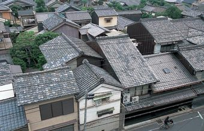

For a decade during the 15th century, warlords waged a civil war, with the Eastern Army fighting against the Western Army. The Western Army's military headquarters (hon-jin) was established in northeastern Kyoto, and this explains the name of the district (nishi means west). Later, weavers settled here and began making a new type of fabric now admired worldwide, called Nishijin-ori. Many of the old tradesmen's houses remain to this day, keeping alive the atmosphere of old Japan. Some have been renovated and given new life as restaurants and studios for artists practicing different genres. In Nishijin, the old and the new exist side by side.
Return